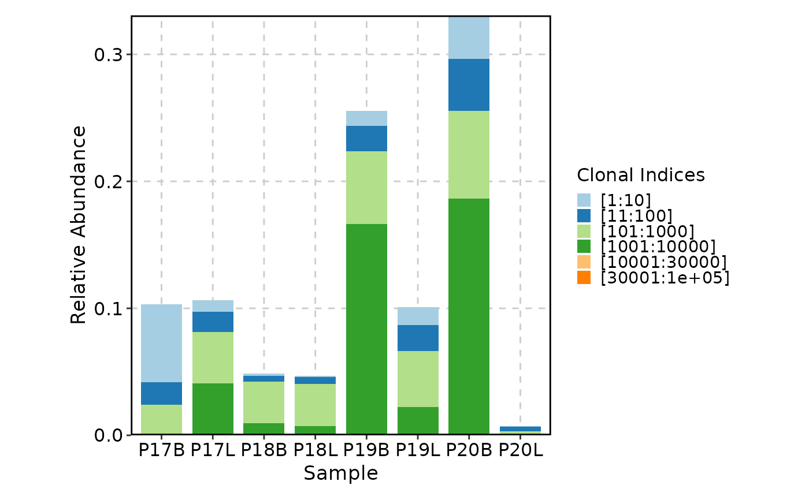
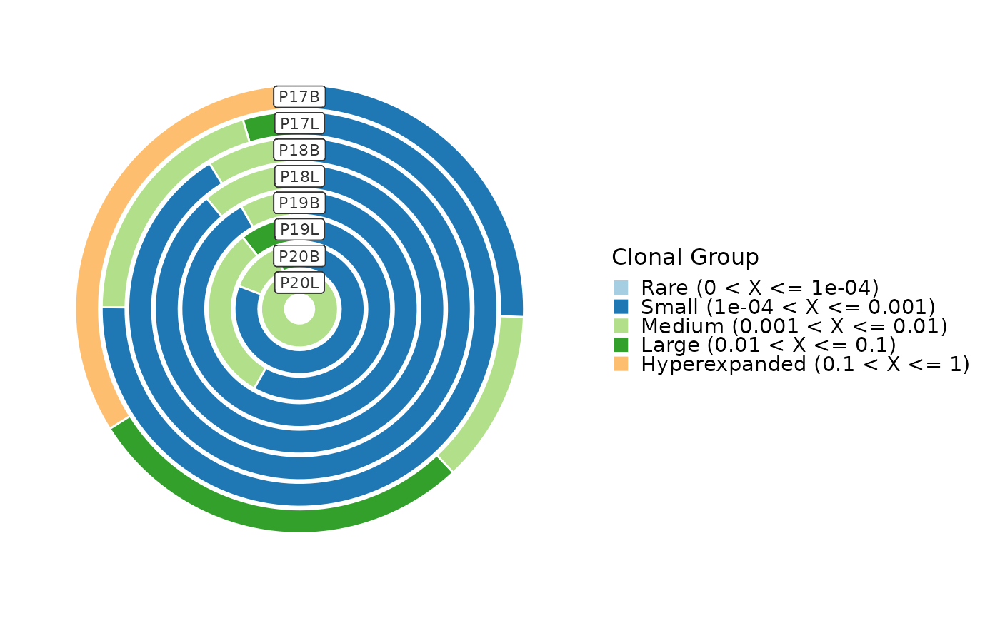
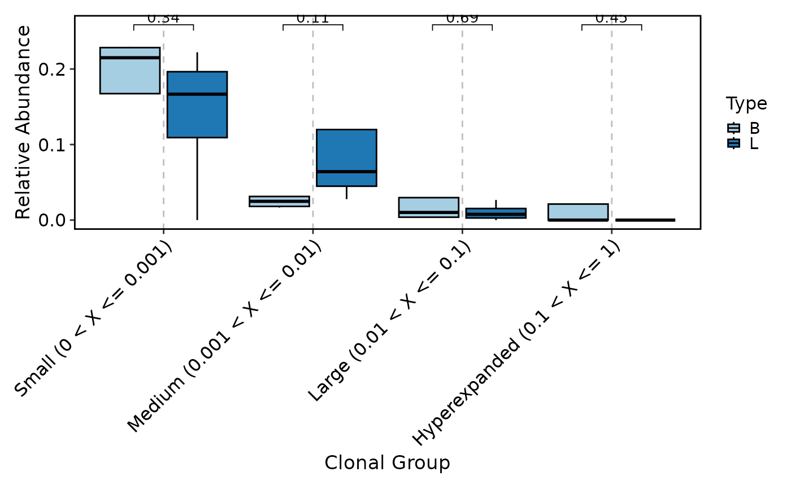
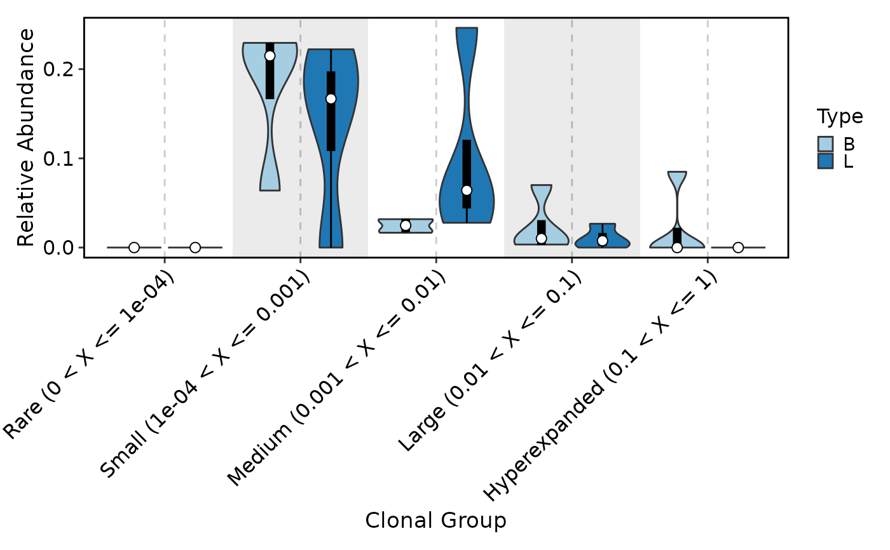
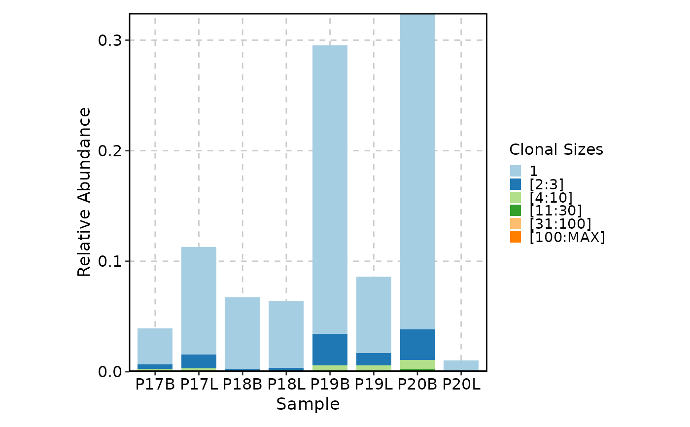

Plot the composition of the clones in different samples/groups.
Usage
ClonalCompositionPlot(
data,
clone_call = "aa",
chain = "both",
method = c("homeostasis", "homeo", "rel", "top", "rare"),
clone_split = NULL,
scale = TRUE,
facet_by = NULL,
group_by = NULL,
split_by = NULL,
xlab = NULL,
ylab = NULL,
plot_type = c("bar", "ring", "box", "violin"),
order = list(),
...
)Arguments
- data
The product of scRepertoire::combineTCR, scRepertoire::combineTCR, or scRepertoire::combineExpression.
- clone_call
How to call the clone - VDJC gene (gene), CDR3 nucleotide (nt), CDR3 amino acid (aa), VDJC gene + CDR3 nucleotide (strict) or a custom variable in the data
- chain
indicate if both or a specific chain should be used - e.g. "both", "TRA", "TRG", "IGH", "IGL"
- method
The method of plot to use. Default is "homeostasis". Possible values are "homeostasis", "homeo", "rel", "top", and "rare".
"homeostasis" - Plot the homeostasis/relative abundance of the clones. The
clone_splitwill be the fraction of the clones in each sample."homeo" - Same as "homeostasis".
"rel" - Same as "homeostasis".
"top" - Plot the top clones. The
clone_splitwill be indexes to cut the clones."rare" - Plot the rare clones. The
clone_splitwill be the clone sizes.
- clone_split
The split for the clones. Default is NULL.
For "homeostasis", "homeo", "rel" - Default is
list(Rare = 1e-04, Small = 0.001, Medium = 0.01, Large = 0.1, Hyperexpanded = 1).For "top" - Default is
c(10, 100, 1000, 10000, 30000, 100000).For "rare" - Default is
c(1, 3, 10, 30, 100).
- scale
Whether to scale the values on the y-axis. Default is TRUE.
TRUE: The values of each group (on the x-axis) will be scaled to 1.
FALSE: No scaling.
"sample"/"Sample": The values in each sample will be scaled to 1.
- facet_by
The column name in the meta data to facet the plots. Default: NULL
- group_by
The column name in the meta data to group the cells. Default: NULL
- split_by
The column name in the meta data to split the plots. Default: NULL
- xlab
The x-axis label. Default is NULL.
- ylab
The y-axis label. Default is NULL.
- plot_type
The type of plot to use. Default is "bar". Possible values are "bar", "ring", "box", and "violin".
- order
The order of the x-axis items or groups. Default is an empty list. It should be a list of values. The names are the column names, and the values are the order.
- ...
Other arguments passed to the specific plot function.
For
barplot, seeplotthis::BarPlot().For
ringplot, seeplotthis::RingPlot().For
boxplot, seeplotthis::BoxPlot().For
violinplot, seeplotthis::ViolinPlot().
Examples
# \donttest{
set.seed(8525)
data(contig_list, package = "scRepertoire")
data <- scRepertoire::combineTCR(contig_list,
samples = c("P17B", "P17L", "P18B", "P18L", "P19B","P19L", "P20B", "P20L"))
data <- scRepertoire::addVariable(data,
variable.name = "Type",
variables = rep(c("B", "L"), 4)
)
data <- scRepertoire::addVariable(data,
variable.name = "Subject",
variables = rep(c("P17", "P18", "P19", "P20"), each = 2)
)
ClonalCompositionPlot(data)
ClonalCompositionPlot(data, method = "top")

ClonalCompositionPlot(data, plot_type = "ring")

ClonalCompositionPlot(data, group_by = "Type", plot_type = "box", comparison = TRUE)
#> Warning: Computation failed in `stat_pwc()`.
#> Caused by error in `mutate()`:
#> ℹ In argument: `data = map(.data$data, .f, ...)`.
#> Caused by error in `map()`:
#> ℹ In index: 1.
#> Caused by error in `map()`:
#> ℹ In index: 1.
#> ℹ With name: V1.
#> Caused by error in `if (f.lower <= 0) ...`:
#> ! missing value where TRUE/FALSE needed
#> Warning: Computation failed in `stat_pwc()`.
#> Caused by error in `mutate()`:
#> ℹ In argument: `data = map(.data$data, .f, ...)`.
#> Caused by error in `map()`:
#> ℹ In index: 1.
#> Caused by error in `map()`:
#> ℹ In index: 1.
#> ℹ With name: V1.
#> Caused by error in `if (f.lower <= 0) ...`:
#> ! missing value where TRUE/FALSE needed

ClonalCompositionPlot(data, group_by = "Type", plot_type = "violin", add_box = TRUE,
add_bg = TRUE)

ClonalCompositionPlot(data, method = "rare")

# }